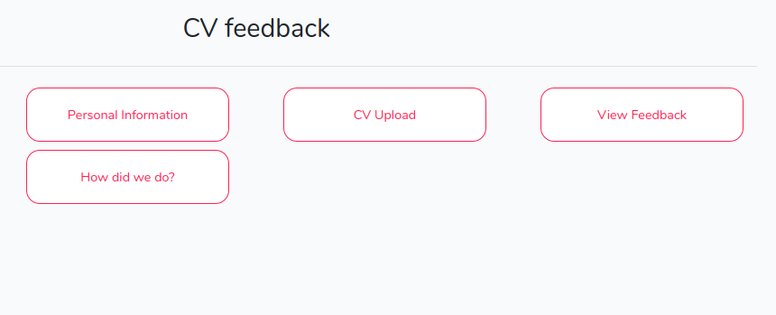

Introduction
What is the portal?
The aim of the portal is to deliver a platform through which to interact with users, which can fit almost any need. It supplies a framework to integrate with many small Laravel apps (modules), and provides a user interface to build up services using the modules. A service is a 'thing' someone can do on your portal (think paying a phone bill or signing up to shifts). The portal allows modules to be strung together and customised, providing a custom step-by-step process to users.
An example of a module may be a file upload module. This module would provide a page on which to upload the file, and a page to view uploaded files (amongst many other features). Through customising the module, this could kick off a CV feedback service supplied by a charity, an expense claim request from a staff member to a company and many other services.
Using multiple modules in a row, a coherent process can be built. For example, the CV feedback service may require a form to be filled in prior to uploading a file, a page to view feedback on the CV and a form to submit feedback after the service is complete. This will all be presented as one coherent step-by-step service. Additionally, emails can be automated to alert those involved about changes, or tasks added to a task management platform. For any more complex services for which you can’t find a module to do the job, we also provide a framework to build your own modules using the familiar Laravel style!

How does the portal work (the SDK)?
The portal is constructed by using the SDK (https://github.com/bristol-su/support). Modules, and the portal, are built using Laravel. The SDK extends the features of laravel, and these additional features are rendered from the SDK by the portal.
Any modules must pull in the SDK. As long as they’ve done this, and register their integrations in the Service Provider, the portal will be able to use the module to set up activities.
Users of the portal (control)
Like most websites, the portal works with users registering. Once logged in, you act as yourself and the view you see is personalised to you as a user.
The portal also supplies additional flexibility to make the portal even more useful. We provide groups and roles. Users can be members of groups, or have a role in a group. By creating and assigning groups and roles, then personalising content based on the groups and/or roles of a user, we can provide a fully customised platform.
For example, a group could be a student-led society, with roles as committee members and members as the group members. In this way, we can deliver a service just for someone in a specific position in a group which has a given tag. We could also set up the portal to handle staff members and a line manager in a department in an office, tenants and a house in a lettings agent, or a teacher and students in a school. You can both use just the user features and add in groups and roles as and when you want.
Where next?
To start installing and the portal, follow our setup directions in the portal documentation.
To start developing a module, head to the module development section.
To learn more about how the SDK works, check out the SDK documentation.
To learn more about how control works, check out the control documentation.
To learn more about how the playground works, check out the playground documentation.